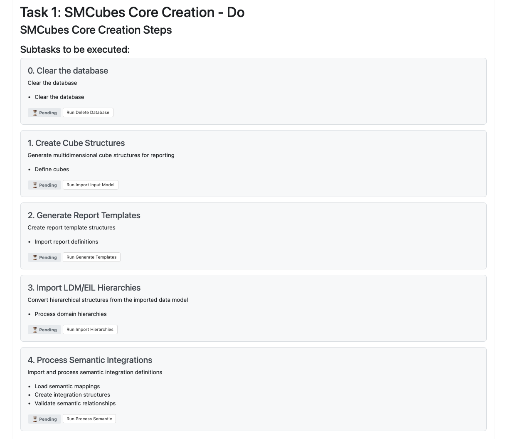
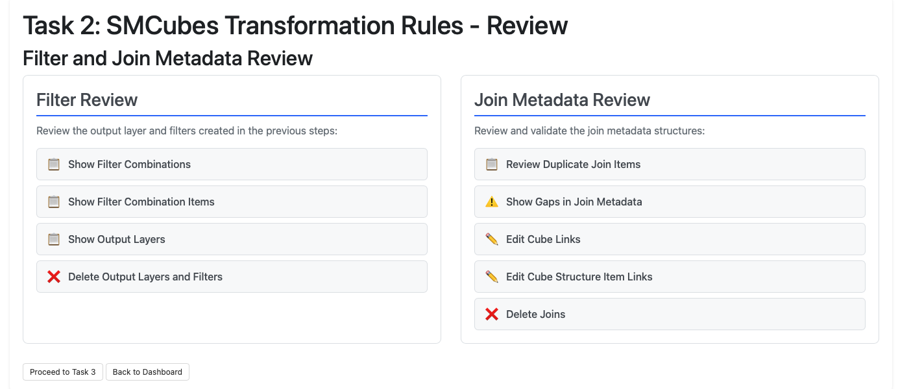

Workflow Dashboard
Eclipse Free BIRD Tools Documentation
Workflow Dashboard User Guide
The Eclipse Free BIRD Tools Workflow Dashboard is your central hub for regulatory reporting workflows. This guide covers the essential steps to execute the 4-task sequential process for BIRD data processing and transformation.
Access the Dashboard
- Launch FreeBIRD Application → Home → "Task Workflow Dashboard"
- Configure your workflow settings before starting
Configuration Setup
Required before starting tasks:

| Setting | Value/Description |
| Data Model Type | Select "EIL (Input Layer)" |
| GitHub Repository URL | Enter your repository URL |
| GitHub Branch | Specify branch (default: "main") |
| Configuration Files Source | Choose "GitHub Repository" |
| Technical Export Source | Select "GitHub Repository" |
| Save Configuration | Click to save all settings |
Quick Actions Panel
| Action | Purpose |
| Retrieve Artifacts | Download configuration files |
| Setup Database | Initialize database environment |
| Select Target Task | Choose any task (1-4) as your endpoint |
| Run Automode | Executes from Task 1 up to your selected target task automatically |
| Task 4: Full Execution | Runs the complete workflow (Tasks 1-4) |
| Partial Workflows | Select Task 2 or 3 to run only up to that point |
| Database Status | ✅ Ready / Setup Required |
| Configuration Status | ✅ Configured / Needs Setup |
| Session ID | Current session identifier |
| Reset Tasks 1-4 | Clear task history, keep configuration |
| Reset Everything | Complete reset including configuration |
4-Task Sequential Workflow
Execute tasks in order: Task 1 → Task 2 → Task 3 → Task 4
Task 1: SMCubes Core Creation
Purpose: Creates foundational data structures and cube definitions

Key Steps:
| Step | Action | Purpose |
| 1 | Click "Do" button | Start Task 1 execution |
| 2a | Clear Database | Click "Run Delete Database" |
| 2b | Create Cube Structures | Click "Run Import Input Model" |
| 2c | Generate Report Templates | Click "Run Generate Templates" |
| 2d | Import LDM/EIL Hierarchies | Click "Run Import Hierarchies" |
| 2e | Process Semantic Integrations | Click "Run Process Semantic" |
| Alternative | Use Quick Actions → select "Task 1" as target → click "Run Automode" | Execute Task 1 automatically |
| Verify | Click "Review" | Confirm completion (50+ cubes, 100+ templates created) |
Task 2: SMCubes Transformation Rules Creation
Purpose: Generates transformation rules and metadata

Key Steps:
| Step | Action | Purpose |
| 1 | Click "Do" button | Start Task 2 execution |
| 2a | Filter Creation | Click "Run Generate Filters" |
| 2b | Join Rules Creation | Click "Run Create Joins Metadata" |
| Alternative | Use Quick Actions → select "Task 2" as target → click "Run Automode" | Execute Tasks 1-2 automatically |
| Verify | Review results | Confirm filter and join metadata creation completed |

Task 3: Python Transformation Rules Creation
Purpose: Converts rules into executable Python code
Key Steps:
| Step | Action | Purpose |
| 1 | Click "Do" button | Start Task 3 execution |
| 2a | Filter Code Generation | Click "Run Generate Filter Code" |
| 2b | Join Code Generation | Click "Run Generate Join Code" |
| Alternative | Use Quick Actions → select "Task 3" as target → click "Run Automode" | Execute Tasks 1-3 automatically |
| Verify | Review results | Confirm executable Python transformation code generated |
Task 4: Full Execution with Test Suite
Purpose: Validates regulatory templates with comprehensive testing

Key Steps:
| Step | Action | Purpose |
| 1 | Click "Do" button | Start Task 4 execution |
| 2 | Execute Configuration File Tests | Click "Run Configuration Tests" |
| Alternative | Use Quick Actions → select "Task 4: Full Execution" as target → click "Run Automode" | Execute the complete workflow (Tasks 1-4) automatically |
| Verify | Review test execution reports | Review pass/fail statistics |


Essential Best Practices
| Sequential Execution | Configuration Management |
| Execute tasks in order (1→2→3→4) either from dashboard or subtask list | Save configuration before starting workflow execution |
| Complete each task before proceeding to the next | Verify GitHub credentials are valid and current |
| Use Review to validate completion of each task | Check system status shows Ready/Configured before execution |
Troubleshooting
| Task Execution Fails | Configuration Issues | Database Problems |
| Tasks fail to execute or complete | Configuration settings not working | Database connection or setup issues |
| • Verify database connectivity and status • Check GitHub repository access • Confirm configuration is saved | • Click "Save Configuration" after changes • Verify repository URLs are correct • Check GitHub token permissions | • Use "Setup Database" in Quick Actions • Verify database service is running • Check connection parameters |
Advanced Features
| Automode | Lineage Tracking | Session Management |
| Use for routine executions after initial setup | Enable in configuration for audit trails | Track executions with session IDs |